Cooking classes in Turin and around
Cooking classes, fresh pasta, bread, pastry and world cuisine courses in Turin, Cuneo and around.
Search all workshops90 activities coming up · updated on 27 October 2026
 tue27octCookingCake & Chill: paint your own cakeTuesday 27 OctoberCentro (TO)with Limaco’s Lab
tue27octCookingCake & Chill: paint your own cakeTuesday 27 OctoberCentro (TO)with Limaco’s Lab tue27octCookingCooking class: stuffed fresh pastaTuesday 27 October, 19:30Centro (TO)with STUDIOFOOD33 with lo chef Stefano Buse
tue27octCookingCooking class: stuffed fresh pastaTuesday 27 October, 19:30Centro (TO)with STUDIOFOOD33 with lo chef Stefano Buse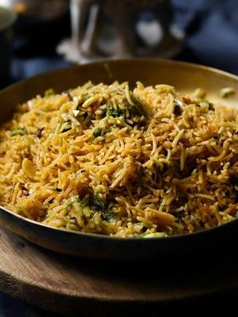
wed28octCookingVegan Japanese cooking: tradition goes vegWednesday 28 October, 17:30–20:30Lingotto (TO) · 80 € · sold outwith Eataly Torino Lingotto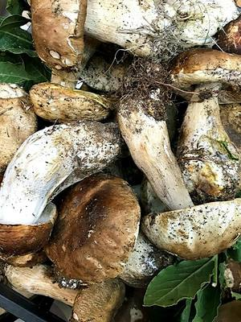
thu29octCookingWoodland cooking: autumn flavoursThursday 29 October, 17:30–20:30Lingotto (TO) · 75 €with Eataly Torino Lingotto with Slow Food- sat31octCookingSpooky Cupcakes: Halloween decoratingSaturday 31 October, 15:30–18:00Centro (TO) · 50 €with Aperi Pods
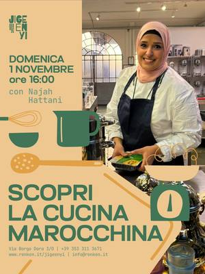
sun1novCookingMoroccan cooking: bastillaSunday 1 November, 16:00–19:00Aurora (TO)with Najah Hattani at Jigeenyi mon2novCookingRamen workshop: plant-based ramenMonday 2 November, 17:30–19:30Lingotto (TO) · 65 € · sold outwith Eataly Torino Lingotto
mon2novCookingRamen workshop: plant-based ramenMonday 2 November, 17:30–19:30Lingotto (TO) · 65 € · sold outwith Eataly Torino Lingotto mon2novCookingCooking class: sushi level 2Monday 2 November, 19:30–22:30Centro (TO) · 85 €with STUDIOFOOD33 with Tabete Market
mon2novCookingCooking class: sushi level 2Monday 2 November, 19:30–22:30Centro (TO) · 85 €with STUDIOFOOD33 with Tabete Market- tue3novCookingPastry lesson: petits foursTuesday 3 November, 17:30–20:30Lingotto (TO) · 90 €with Eataly Torino Lingotto
 tue3novCookingCooking class: beef fillet and tagliataTuesday 3 November, 19:30–22:30Centro (TO) · 75 €with STUDIOFOOD33 with lo chef Stefano Buse
tue3novCookingCooking class: beef fillet and tagliataTuesday 3 November, 19:30–22:30Centro (TO) · 75 €with STUDIOFOOD33 with lo chef Stefano Buse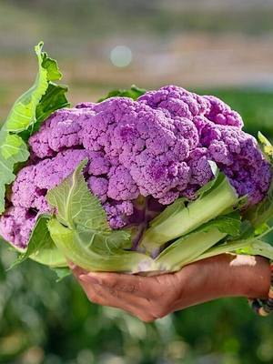
wed4novCookingCabbage patch kitchen: brassica recipesWednesday 4 November, 17:30–20:30Lingotto (TO) · 70 €with Eataly Torino Lingotto- wed4novCookingCooking class: Sichuan cuisineWednesday 4 November, 19:30–22:30Centro (TO) · 85 €with STUDIOFOOD33
 thu5novCookingRice, but not as you know it: creative recipesThursday 5 November, 17:30–20:30Lingotto (TO) · 75 €with Eataly Torino Lingotto with Slow Food
thu5novCookingRice, but not as you know it: creative recipesThursday 5 November, 17:30–20:30Lingotto (TO) · 75 €with Eataly Torino Lingotto with Slow Food thu5novCookingCooking class: roast beef and tajarinThursday 5 November, 19:30–22:30Centro (TO) · 75 €with STUDIOFOOD33 with lo chef Stefano Buse
thu5novCookingCooking class: roast beef and tajarinThursday 5 November, 19:30–22:30Centro (TO) · 75 €with STUDIOFOOD33 with lo chef Stefano Buse fri6novCookingCooking class: plant-based street foodFriday 6 November, 19:30–22:30Centro (TO) · 85 €with STUDIOFOOD33 with le chef di RosaRegina
fri6novCookingCooking class: plant-based street foodFriday 6 November, 19:30–22:30Centro (TO) · 85 €with STUDIOFOOD33 with le chef di RosaRegina sat7novCookingThe art of fonduta: melting cheesesSaturday 7 November, 09:30–12:30Lingotto (TO) · 70 €with Eataly Torino Lingotto with Slow Food
sat7novCookingThe art of fonduta: melting cheesesSaturday 7 November, 09:30–12:30Lingotto (TO) · 70 €with Eataly Torino Lingotto with Slow Food sat7novPainting and writingElixirs: art journal and fire ciderSaturday 7 November, 10:00–12:30Aurora (TO) · 35 €with Kiva at Velvet Truffle Riot
sat7novPainting and writingElixirs: art journal and fire ciderSaturday 7 November, 10:00–12:30Aurora (TO) · 35 €with Kiva at Velvet Truffle Riot sat7novCookingCooking class: white truffleSaturday 7 November, 20:00–23:00Centro (TO) · 150 €with STUDIOFOOD33 with lo chef Stefano Buse
sat7novCookingCooking class: white truffleSaturday 7 November, 20:00–23:00Centro (TO) · 150 €with STUDIOFOOD33 with lo chef Stefano Buse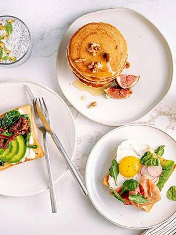
sun8novCookingFestive brunch: cooking demoSunday 8 November, 09:30–12:30Lingotto (TO) · 50 €with Eataly Torino Lingotto mon9novCookingPizza workshop: pizza and spritzMonday 9 November, 18:00–19:30Lingotto (TO) · 50 € · sold outwith Eataly Torino Lingotto
mon9novCookingPizza workshop: pizza and spritzMonday 9 November, 18:00–19:30Lingotto (TO) · 50 € · sold outwith Eataly Torino Lingotto- tue10novCookingPastry lesson: sauces and creamsTuesday 10 November, 17:30–20:30Lingotto (TO) · 80 €with Eataly Torino Lingotto
- tue10novCookingCassava: workshop and tastingTuesday 10 November, 18:30Cit Turin (TO)with Gastronomia L’Agenzia di Viaggi
- tue10novCookingOde to Piedmont: Piedmontese cuisineTuesday 10 November, 19:30–22:30Centro (TO) · 75 €with STUDIOFOOD33
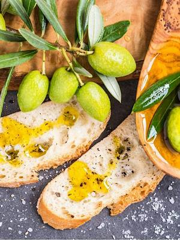
fri13novCookingNo-cook menu: olive oil specialFriday 13 November, 17:30–20:30Lingotto (TO) · 70 €with Eataly Torino Lingotto with Slow Food sat14novCookingCake Painting: decorate and paint a cakeSaturday 14 NovemberCentro (TO) · 50 €with Aperi Pods
sat14novCookingCake Painting: decorate and paint a cakeSaturday 14 NovemberCentro (TO) · 50 €with Aperi Pods sat14novCookingBento cake workshop: icing and letteringSaturday 14 November, 15:00–17:00San Salvario (TO) · 35 €with Giuppi Pasticceria
sat14novCookingBento cake workshop: icing and letteringSaturday 14 November, 15:00–17:00San Salvario (TO) · 35 €with Giuppi Pasticceria mon16novCookingAphrodisiac menu: couples’ cookingMonday 16 November, 17:30–20:30Lingotto (TO) · 160 €with Eataly Torino Lingotto with Slow Food
mon16novCookingAphrodisiac menu: couples’ cookingMonday 16 November, 17:30–20:30Lingotto (TO) · 160 €with Eataly Torino Lingotto with Slow Food- mon16novCookingCooking class: pizza and Ligurian focacciaMonday 16 November, 19:30–22:30Centro (TO) · 85 €with STUDIOFOOD33
 tue17novCookingPastry lesson: savoury bitesTuesday 17 November, 17:30–20:30Lingotto (TO) · 90 €with Eataly Torino Lingotto
tue17novCookingPastry lesson: savoury bitesTuesday 17 November, 17:30–20:30Lingotto (TO) · 90 €with Eataly Torino Lingotto- tue17novCookingCooking class: gourmet risottoTuesday 17 November, 19:30–22:30Centro (TO) · 75 €with STUDIOFOOD33
 wed18novCookingFrench cooking: a night at the brasserieWednesday 18 November, 17:30–20:30Lingotto (TO) · 80 €with Eataly Torino Lingotto with lo chef Clovis Jourdain
wed18novCookingFrench cooking: a night at the brasserieWednesday 18 November, 17:30–20:30Lingotto (TO) · 80 €with Eataly Torino Lingotto with lo chef Clovis Jourdain- wed18novCookingCooking class: Japanese noodlesWednesday 18 November, 19:30–22:30Centro (TO) · 85 €with STUDIOFOOD33
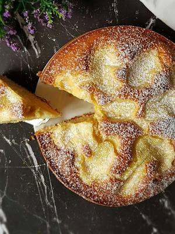
fri20novCookingPastry lesson: everyday cakesFriday 20 November, 17:30–20:30Lingotto (TO) · 70 €with Eataly Torino Lingotto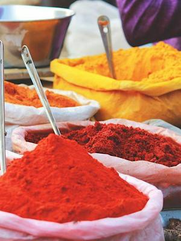
sat21novCookingWorld cuisines: gluten-free IndianSaturday 21 November, 14:30–17:30Lingotto (TO) · 80 €with Eataly Torino Lingotto sat21novCookingSourdough bread: a baking courseSaturday 21 November, 14:30–18:30San Donato (TO) · 50 €with Panacea Social Farm
sat21novCookingSourdough bread: a baking courseSaturday 21 November, 14:30–18:30San Donato (TO) · 50 €with Panacea Social Farm- sun22novCookingAutumn fusion veg: plant-based cookingSunday 22 November, 09:30–12:30Lingotto (TO) · 75 €with Eataly Torino Lingotto
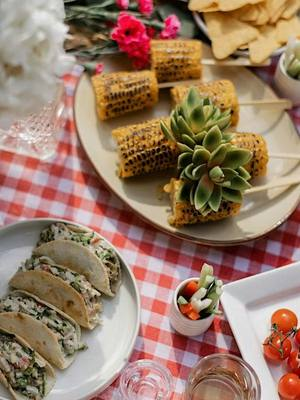
sun22novCookingHappy vegan finger food: veggie nibblesSunday 22 November, 14:30–17:30Lingotto (TO) · 75 €with Eataly Torino Lingotto with Caterina Mosca mon23novCookingPizza workshop: pizza and G&TMonday 23 November, 18:00–19:30Lingotto (TO) · 50 € · sold outwith Eataly Torino Lingotto
mon23novCookingPizza workshop: pizza and G&TMonday 23 November, 18:00–19:30Lingotto (TO) · 50 € · sold outwith Eataly Torino Lingotto- mon23novCookingCooking class: Mexican aperitivoMonday 23 November, 19:30–22:30Centro (TO) · 85 €with STUDIOFOOD33
 tue24novCookingRamen workshop: all about ramenTuesday 24 November, 17:30–19:30Lingotto (TO) · 65 € · sold outwith Eataly Torino Lingotto
tue24novCookingRamen workshop: all about ramenTuesday 24 November, 17:30–19:30Lingotto (TO) · 65 € · sold outwith Eataly Torino Lingotto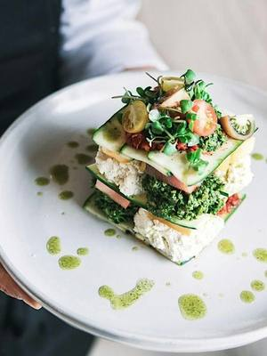
thu26novCookingFestive plant-based cooking: veg menuThursday 26 November, 17:30–20:30Lingotto (TO) · 75 €with Eataly Torino Lingotto with Slow Food- thu26novCookingCooking class: autumn bentoThursday 26 November, 19:30–22:30Centro (TO) · 85 €with STUDIOFOOD33 with Tabete Market
- sun29novCookingAsian finger food: couples’ cookingSunday 29 November, 09:30–12:30Lingotto (TO) · 160 € · sold outwith Eataly Torino Lingotto
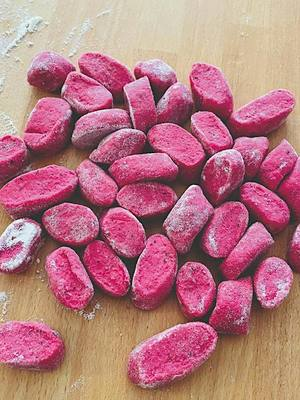
sun29novCookingCooking class: gnocchiSunday 29 November, 14:30–16:30Lingotto (TO) · 65 €with Eataly Torino Lingotto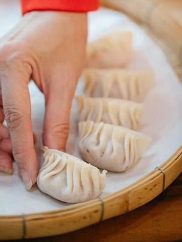
mon30novCookingGyoza workshop: gyoza and beerMonday 30 November, 17:30–19:30Lingotto (TO) · 65 € · sold outwith Eataly Torino Lingotto with Chiara Lazzarin- mon30novCookingCooking class: French cuisineMonday 30 November, 19:30–22:30Centro (TO) · 85 €with STUDIOFOOD33 with lo chef Patrik Lisa
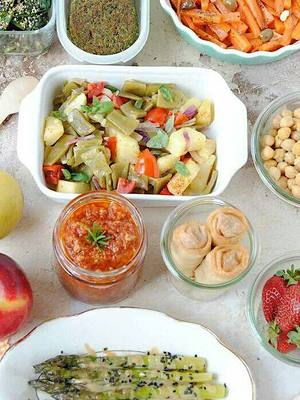
tue1decCookingGlobal batch cooking: cook once, eat all weekTuesday 1 December, 17:30–20:30Lingotto (TO) · 80 €with Eataly Torino Lingotto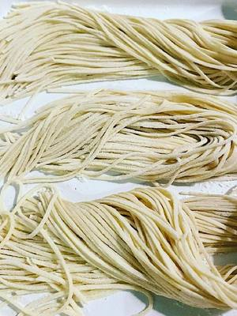
wed2decCookingWorld cuisines: noodlesWednesday 2 December, 17:30–20:30Lingotto (TO) · 80 €with Eataly Torino Lingotto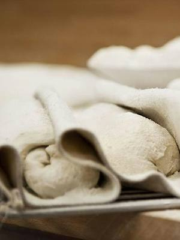
thu3decCookingHomemade bread: flours and doughsThursday 3 December, 17:30–20:30Lingotto (TO) · 75 €with Eataly Torino Lingotto with Slow Food fri4decCookingChristmas special: edible giftsFriday 4 December, 17:30–20:30Lingotto (TO) · 70 €with Eataly Torino Lingotto with Chiara Lazzarin
fri4decCookingChristmas special: edible giftsFriday 4 December, 17:30–20:30Lingotto (TO) · 70 €with Eataly Torino Lingotto with Chiara Lazzarin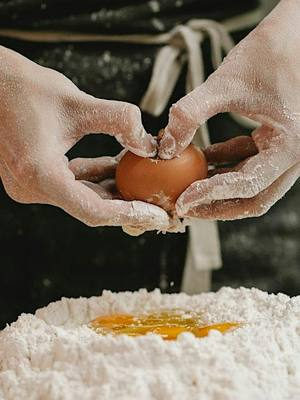
from5decCookingFresh pasta ABC: beginners’ coursefrom Saturday 5 December, 09:30–12:30Lingotto (TO) · 250 €with Eataly Torino Lingotto sat5decCookingPizza Lovers: pizza for twoSaturday 5 December, 14:30–17:30Lingotto (TO) · 160 €with Eataly Torino Lingotto
sat5decCookingPizza Lovers: pizza for twoSaturday 5 December, 14:30–17:30Lingotto (TO) · 160 €with Eataly Torino Lingotto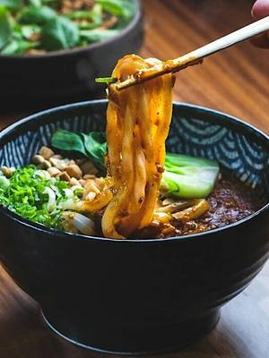
mon7decCookingRamen workshop: all about ramenMonday 7 December, 17:30–19:30Lingotto (TO) · 65 € · sold outwith Eataly Torino Lingotto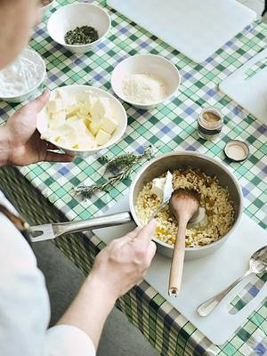
wed9decCookingCooking class: risottoWednesday 9 December, 17:30–20:30Lingotto (TO) · 80 €with Eataly Torino Lingotto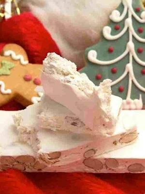
thu10decCookingThe Christmas hamper: edible giftsThursday 10 December, 17:30–20:30Lingotto (TO) · 80 €with Eataly Torino Lingotto fri11decCookingCooking class: homemade pizzaFriday 11 December, 17:30–20:30Lingotto (TO) · 75 €with Eataly Torino Lingotto with Slow Food
fri11decCookingCooking class: homemade pizzaFriday 11 December, 17:30–20:30Lingotto (TO) · 75 €with Eataly Torino Lingotto with Slow Food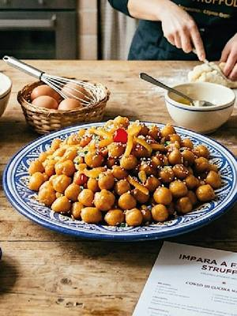
fri11decCookingCooking class: struffoliFriday 11 December, 17:30–20:30Lingotto (TO) · 70 €with Eataly Torino Lingotto- sat12decCookingPastry lesson: Christmas cakeSaturday 12 December, 14:30–17:30Lingotto (TO) · 90 €with Eataly Torino Lingotto
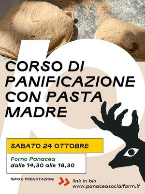
sat12decCookingSourdough bread: a baking courseSaturday 12 December, 14:30–18:30Barriera di Milano (TO) · 50 €with Panacea Social Farm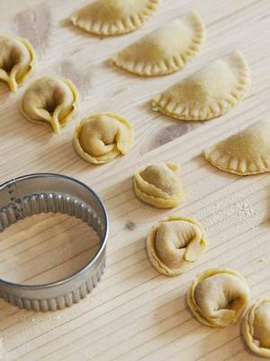
sun13decCookingChristmas fresh pasta: doughs and fillingsSunday 13 December, 14:30–17:30Lingotto (TO) · 70 € · sold outwith Eataly Torino Lingotto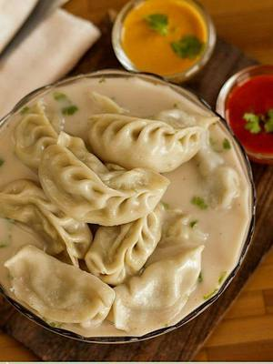
mon14decCookingGyoza workshop: veggie gyoza and beerMonday 14 December, 17:30–19:30Lingotto (TO) · 65 € · sold outwith Eataly Torino Lingotto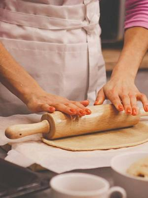
tue15decCookingFestive savoury nibbles: crackers and grissiniTuesday 15 December, 17:30–20:30Lingotto (TO) · 80 €with Eataly Torino Lingotto- thu17decCookingPastry lesson: tea biscuitsThursday 17 December, 17:30–20:30Lingotto (TO) · 90 €with Eataly Torino Lingotto
- fri18decCookingChristmas fresh pasta: couples’ classFriday 18 December, 17:30–20:30Lingotto (TO) · 160 € · sold outwith Eataly Torino Lingotto
 sat19decCookingBread-making ABC: festive breadsSaturday 19 December, 14:30–16:30Lingotto (TO) · 120 €with Eataly Torino Lingotto
sat19decCookingBread-making ABC: festive breadsSaturday 19 December, 14:30–16:30Lingotto (TO) · 120 €with Eataly Torino Lingotto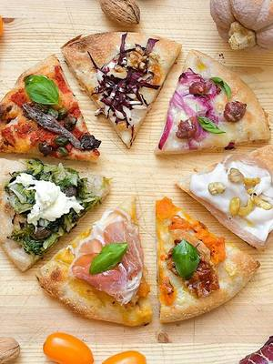
mon21decCookingPizza workshop: pizza and G&TMonday 21 December, 18:00–19:30Lingotto (TO) · 50 €with Eataly Torino Lingotto from9janCookingCooking ABC: beginners’ coursefrom Saturday 9 January, 09:30–12:30Lingotto (TO) · 250 €with Eataly Torino Lingotto
from9janCookingCooking ABC: beginners’ coursefrom Saturday 9 January, 09:30–12:30Lingotto (TO) · 250 €with Eataly Torino Lingotto- tue12janCookingCooking class: plin, brasato and bunetTuesday 12 January, 19:30–23:30Centro (TO) · 85 €with STUDIOFOOD33
- mon18janCookingCooking class: pan pizza and farinataMonday 18 January, 19:30–23:30Centro (TO) · 75 €with STUDIOFOOD33
- tue19janCookingCooking class: Roman cuisineTuesday 19 January, 19:30–22:30Centro (TO) · 85 €with STUDIOFOOD33
- wed20janCookingCooking class: sushi and bubblyWednesday 20 January, 19:30–22:30Centro (TO) · 85 €with STUDIOFOOD33
- thu21janCookingCooking class: ramenThursday 21 January, 19:30–22:30Centro (TO) · 85 €with STUDIOFOOD33 with Tabete Market
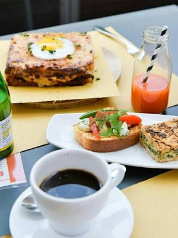
sun24janCookingSuper vegan brunch: plant-based brunchSunday 24 January, 09:30–12:30Lingotto (TO) · 80 €with Eataly Torino Lingotto sun24janCookingTasty detox: cleansing cookingSunday 24 January, 14:30–17:30Lingotto (TO) · 80 €with Eataly Torino Lingotto with Caterina Mosca
sun24janCookingTasty detox: cleansing cookingSunday 24 January, 14:30–17:30Lingotto (TO) · 80 €with Eataly Torino Lingotto with Caterina Mosca- mon25janCookingCooking class: vegetarian MexicanMonday 25 January, 19:30–22:30Centro (TO) · 85 €with STUDIOFOOD33
- fri29janCookingCooking class: black truffleFriday 29 January, 20:00–23:00Centro (TO) · 150 €with STUDIOFOOD33 with lo chef Patrik Lisa
- tue2febCookingCooking class: tagliatelle and vitello tonnatoTuesday 2 February, 19:30–22:30Centro (TO) · 75 €with STUDIOFOOD33 with La Bottega di Mastro Taricco
- wed10febCookingCooking class: gyoza and Japanese beerWednesday 10 February, 19:30–22:30Centro (TO) · 85 €with STUDIOFOOD33
- sun14febCookingLove is in the kitchen: Valentine’s dinnerSunday 14 February, 20:00–23:00Centro (TO) · 130 €with STUDIOFOOD33
- wed17febCookingCooking class: ramen and Japanese beerWednesday 17 February, 19:30–22:30Centro (TO) · 75 €with STUDIOFOOD33
- sat20febCookingSecretly vegan: social cookingSaturday 20 February, 14:30–17:30Lingotto (TO) · 70 €with Eataly Torino Lingotto
- tue23febCookingCooking class: battuta, risotto and bonetTuesday 23 February, 19:30–22:30Centro (TO) · 75 €with STUDIOFOOD33
 dateof your choiceCookingCesarine: pasta class in a local homeDate of your choiceTurin · from 129 €with Cesarine
dateof your choiceCookingCesarine: pasta class in a local homeDate of your choiceTurin · from 129 €with Cesarine dateof your choiceCookingChoco-Story: chocolate workshopDate of your choiceSan Salvario (TO) · from 39 €with Choco-Story Torino
dateof your choiceCookingChoco-Story: chocolate workshopDate of your choiceSan Salvario (TO) · from 39 €with Choco-Story Torino dateof your choiceCookingCooking class: fresh pasta and tiramisùDate of your choiceSan Salvario (TO) · 75 €with Cook & Walk
dateof your choiceCookingCooking class: fresh pasta and tiramisùDate of your choiceSan Salvario (TO) · 75 €with Cook & Walk dateof your choiceCookingCooking class: pasta, pizza and tiramisùDate of your choiceVanchiglia (TO) · from 65 €with Forchette a sinistra
dateof your choiceCookingCooking class: pasta, pizza and tiramisùDate of your choiceVanchiglia (TO) · from 65 €with Forchette a sinistra dateof your choiceCookingHappiness Factory: Leone chocolateDate of your choiceCollegno (TO) · 35 €with Leone 1857
dateof your choiceCookingHappiness Factory: Leone chocolateDate of your choiceCollegno (TO) · 35 €with Leone 1857- dateto be confirmedCookingA Taste of the World: plant-based cookingDate to be confirmedTurin · 50 €with Masala Studio
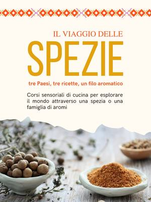
dateto be confirmedCookingThe Spice Journey: plant-based recipesDate to be confirmedTurin · 50 €with Masala Studio dateof your choiceCookingFresh pasta at the winery: tagliatelleDate of your choiceVillarbasse (TO) · from 108 €with Vignaiole Prever
dateof your choiceCookingFresh pasta at the winery: tagliatelleDate of your choiceVillarbasse (TO) · from 108 €with Vignaiole Prever